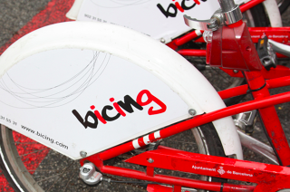

El bicing sitges es un proyecto nuevo en colaboración de una empresa de Barcelona con tal de hacer del uso de la bicicleta una acción mucha mas natural, más comoda para moverte que ir en coche i mas respetuosa con la naturaleza.
En esta iniciativa de bicing en Sitges lo que os ofrecemos son diferentes tipos de bicicletas (disponibles en el apartado Productos), diferentes rutas opcionales por si se quiere hacer una de las rutas ya diseñadas (disponibles en el apartado Rutas y, como no, 4 diferentes puestos de alquiler de las bicicletas repartidos por diferentes puntos de la ciudad de Sitges (disponibles en Localización). Si quereis saber más, podeis contactar con nosotros con los diferentes metodos os ofrecemos en el apartado Contacto.
